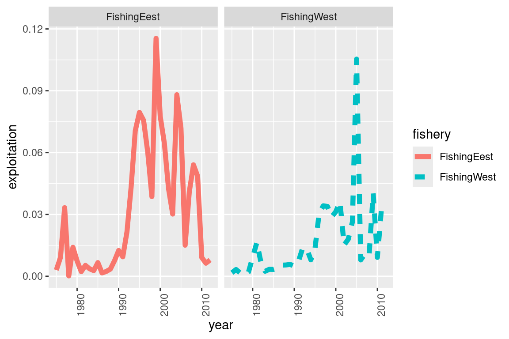
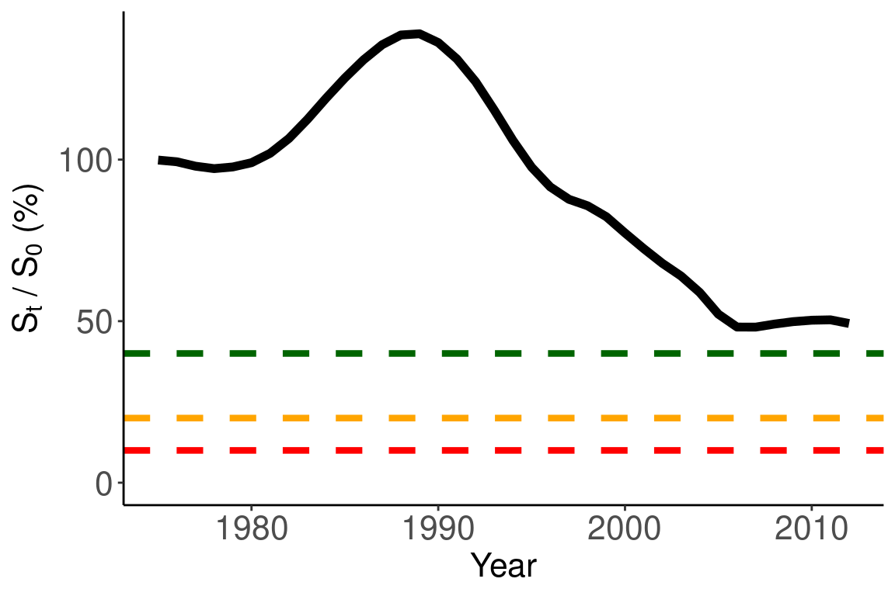
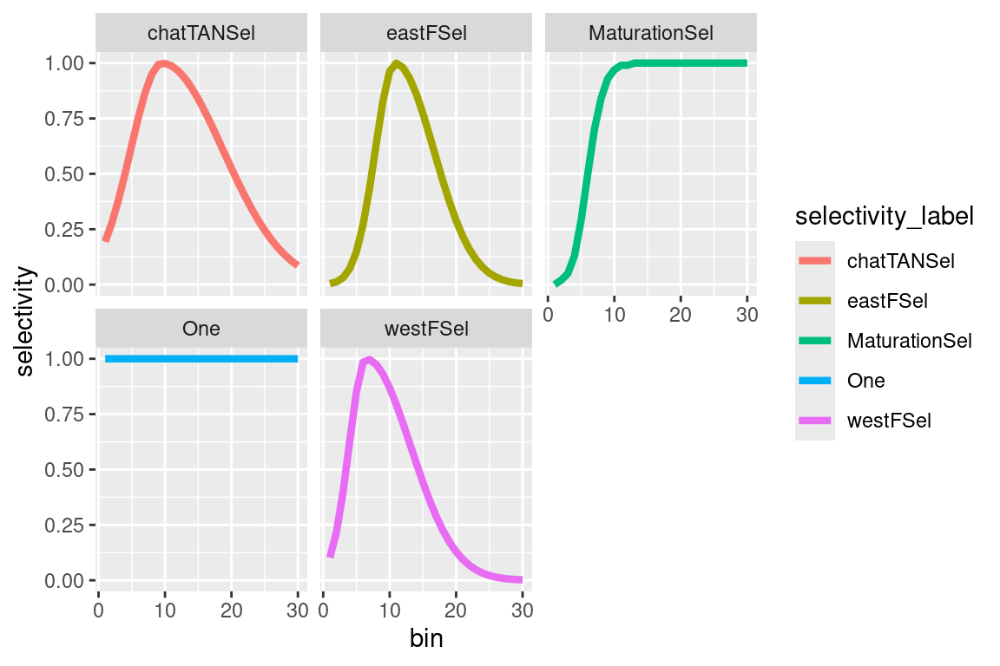
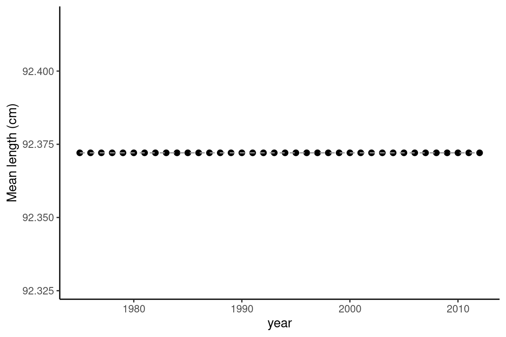
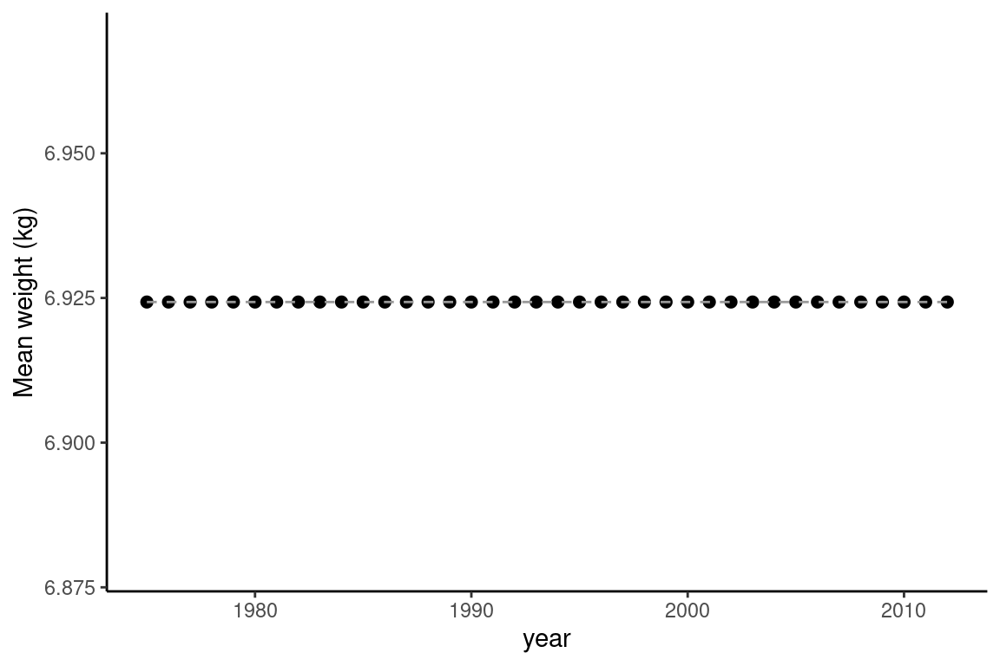
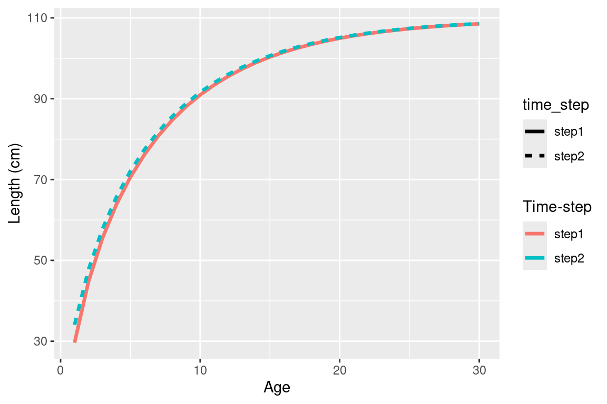
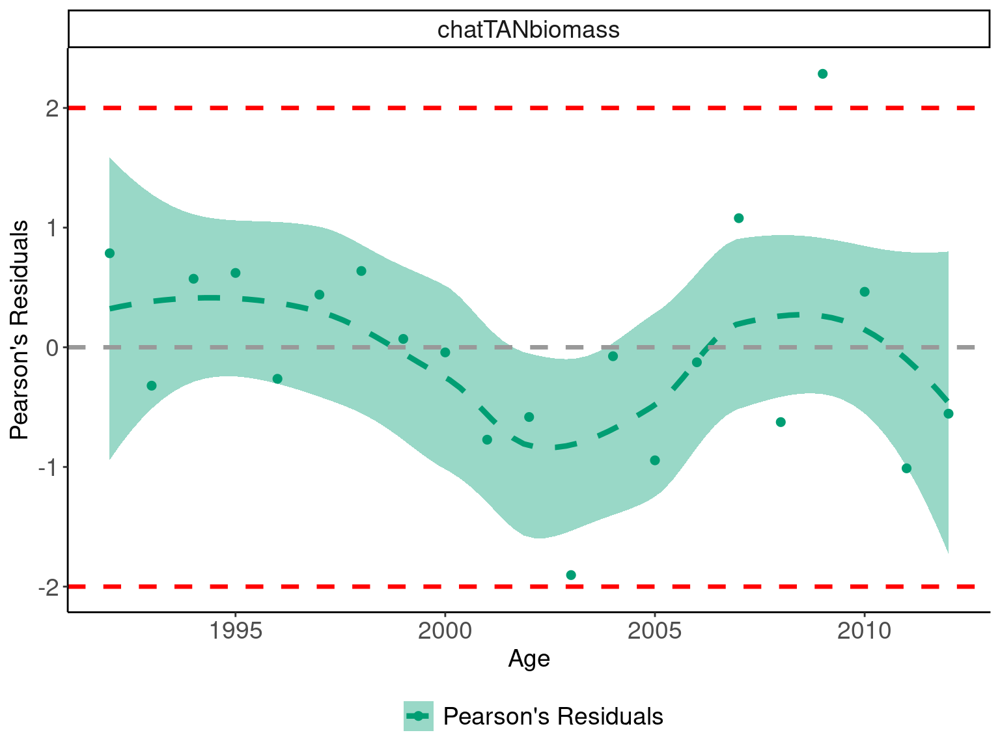
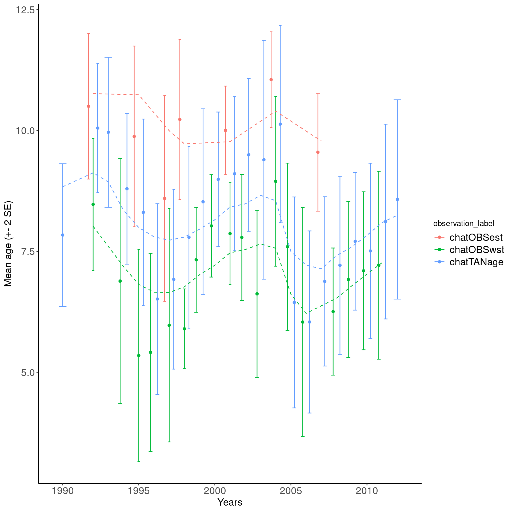

Chapter 4 MPD summaries
4.1 Single Model Output
file_name = system.file("extdata","SimpleTestModel",
"estimate.log", package = "r4Casal2", mustWork = TRUE)
mpd = extract.mpd(file = file_name)4.1.1 Model Convergence
There are a range of appproaches for checking your model has converged. The approaches we will be working through include checking the hessian is positive definite, checking parameters are not running to bounds and reestimate with random starting locations.
When estimating models in Casal2, it is recommended to have the following report included
@report covariance_matrix
type covariance_matrix
## or the Hessian
@report hessian_matrix
type hessian_matrixWhen estimation is complete and you have read in the Casal2 output using Casal2::extract.mpd().
# file name
mpd_file_name = system.file("extdata", "PosteriorPredictiveChecks","estimate.log",
package = "r4Casal2", mustWork = TRUE)
# read in output
mpd = extract.mpd(file = mpd_file_name)
# is covariance symetric
isSymmetric(mpd$covar$covariance_matrix)
# is hessian invertable
is_matrix_invertable(mpd$hess$hessian_matrix)
# check high correlations
correlation_matrix = cov2cor(mpd$covar$covariance_matrix)
corr_df = get_high_correlations(correlation_matrix = correlation_matrix, max_correlation = 0.8,
labels = names(mpd$estimate_value$values))
corr_df$correlation = round(corr_df$correlation, 3)kable(x = corr_df[,c("correlation", "row_param", "col_param")],
caption = "Correlated Parameters")| correlation | row_param | col_param |
|---|---|---|
| -0.974 | processRecruitment.b0 | catchability[chatTANq].q |
| 0.830 | selectivity[chatTANSel].mu | selectivity[chatTANSel].sigma_l |
| 0.951 | selectivity[eastFSel].mu | selectivity[eastFSel].sigma_l |
| 0.925 | selectivity[westFSel].mu | selectivity[westFSel].sigma_l |
| 0.810 | processRecruitment.ycs_values{1978} | processRecruitment.ycs_values{1979} |
| 0.818 | processRecruitment.ycs_values{1979} | processRecruitment.ycs_values{1980} |
| 0.827 | processRecruitment.ycs_values{1980} | processRecruitment.ycs_values{1981} |
| 0.831 | processRecruitment.ycs_values{1981} | processRecruitment.ycs_values{1982} |
| 0.835 | processRecruitment.ycs_values{1982} | processRecruitment.ycs_values{1983} |
You will want to try remove high correlations from the covariance to help estimation and MCMC simulations. We recommend you explore parameter transformations to remove high correlations or alternative parameterisations.
Once these are satisfied you will have more confidence in your standard errors, in addition to being able to run MCMC run mode.
Another useful convergence diagnostic is re-estimating Casal2 with difference starting locations. The function used for this is ?generate.starting.pars. This will read a Casal2 config file that contains all the @estimate definitions are generate a bunch of random starting values in the format of useable for -i in Casal2. Below is some example R code of running Casal2 from R with randomly generated starting values.
working_dir = "Directory to Casal output"
## generate starting values
start_pars = generate.starting.pars(path = working_dir,
estimation_csl2_file = "estimation.csl2",
par_file_name = "starting_pars.out")
## re-run Casal2
current_dir = getwd()
setwd(working_dir)
system2(command = "casal2", args = "-e -o multi_start_pars.par -i starting_pars.out",
stdout = "multi_start.log",
stderr = "multi_start.err", wait=TRUE)
system2(command = "casal2", args = "-r -i starting_pars.out",
stdout = "multi_start_init.log",
stderr = "multi_start_init.err", wait=TRUE)
setwd(current_dir)
## read in jitter_start run
multi_est = extract.mpd("multi_start.log", path = working_dir)
multi_run = extract.mpd("multi_start_init.log", path = working_dir)
## check if any didn't converge
## plot SSBS
ssb_df = get_derived_quanitites(multi_est)
ggplot(ssb_df, aes(x = years, y = values, col = par_set, linetype = par_set)) +
geom_line(size = 1.5) +
labs(x = "Years",y = "SSB", linetype = "Starting\nvalues", col = "Starting\nvalues")
ssb_df = get_derived_quanitites(multi_run)
ggplot(ssb_df, aes(x = years, y = values, col = par_set, linetype = par_set)) +
geom_line(size = 1.5) +
labs(x = "Years",y = "SSB", linetype = "Starting\nvalues", col = "Starting\nvalues")
## get aggregated objective functions
obj = aggregate_objective_report(model = multi_est)
head(obj)A useful diagnostic that is encouraged to explore is to run Casal2 as an age-structured population model (ASPM) (Minte-Vera et al. 2017; Carvalho et al. 2021). This is useful for asking the following question “do we need to know the variability in recruitment to get the “correct” trends in relative abundance and the absolute scale of the model?” The diagnostic is run following these steps 1. Estimate the full integrated model 2. Fix selectivity parameters at MPD values from step 2 3. Turn off recruitment variability i.e., assume \(R_0\) for all years 4. fit the model (ASPM) to the indices of abundance only. Just estimating \(R_0\), \(q\) etc. 5. fit the above model again but estimate YCS parameters (ASPMdev) 6. fit the model again with the recruitment deviates set equal to the MPD values from the integrated model (ASPMfix)
This runs will help you explore the fit and production assumptions in the data. The idea is to understand what parameters are informing what population signals and how perhaps identify misspecifications. For more information on this diagnostic we recommend users read Minte-Vera et al. (2017).
4.1.2 Data Weighting
Some pseudo r code to help with data weighting according to Francis (2011) with multinomial data.
working_dir = "Directory to Casal output"
reweight_folder = "Reweight"
## Don't always want to re-run this code
if(FALSE) {
weights = run_automatic_reweighting(config_dir = working_dir,
config_filename = "config.csl2",
weighting_folder_name = reweight_folder,
mpd_file_name = "estimate.log",
n_loops = 3,
approximate_single_year_obs = T)
saveRDS(weights, file = file.path(working_dir, reweight_folder, "Weights.RDS"))
}
## get reweighted MPDs to observe the effect
MPD_list = extract_reweighted_mpds(file.path(working_dir,reweight_folder))
## plot SSBs
plot_derived_quantities(MPD_list)
plot_fishery(MPD_list, quantity = "exploitation")
plot_recruitment(MPD_list, quantity = "standardised_recruitment_multipliers")4.1.3 Model quantities
Fishing Pressures
Below illustrates code to plot fishing pressure, but you can also easily adapt the code to plot catches. One thing to note, is Casal2 will report both exploitation_rate (actual a proportion also called harvest rate) and fishing_pressures. For models that only have a single fishery per time-step and area these quantities will be the same. If there are multiple fisheries interacting with the partition in the same time-step then these quantities will differ. Fishing pressure is the maximum exploitation applied to the partition for that time-step. See the Casal2 user manual for more detail on the difference. exploitation_rate reported is just
\[
\frac{catch}{vunerable}
\]
Some R-code used to summarise fishing pressures.
file_name = system.file("extdata", "SimpleTestModel", "estimate.log",
package = "r4Casal2", mustWork = TRUE)
mpd = extract.mpd(file = file_name)
# Report labels
# names(mpd)
# plot fishing pressures
fishery_info = get_fisheries(mpd)
head(fishery_info)
# Note this will print both fishing pressure and exploitation
my_plot = ggplot(fishery_info, aes(x = year, y = exploitation, col = fishery, linetype = fishery)) +
geom_line(size =2)
my_plot Flexibility using standard ggplot functions
Flexibility using standard ggplot functions
# you can add adjust it as you please, for example if you want 3 panels for each fishery
my_plot +
facet_wrap(~fishery) +
theme(axis.text.x = element_text(angle = 90))
# Adjust ylim and add a reference limit
my_plot + ylim(0,0.09) + geom_hline(yintercept = 0.05, linetype = "dashed") #### SSBs {-}
#### SSBs {-}
# get SSB and recruit
ssb_df = get_dqs(mpd)
ssb_df$model_year = ssb_df$years
recruit_df = get_BH_recruitment(mpd)
# merge these two data frames
joint_df = right_join(x = ssb_df, y = recruit_df, by = c("model_year", "par_set"))
## for multi-stock models, you will need to also join by stock id
joint_df$percent_b0 = joint_df$values / joint_df$b0 * 100
## plot percent B0
ggplot(joint_df, aes(x = years, y = percent_b0)) +
geom_line(size = 2) +
ylim(0,NA) +
labs(x = "Year", y = expression(paste(S[t], " / ", S[0], " (%)"))) +
geom_hline(yintercept = 40, col = "darkgreen", linetype = "dashed", size = 1.5) +
geom_label(x = 1900, y = 40, label = "Target") +
geom_hline(yintercept = 20, col = "orange", linetype = "dashed", size = 1.5) +
geom_label(x = 1900, y = 20, label = "Soft") +
geom_hline(yintercept = 10, col = "red", linetype = "dashed", size = 1.5) +
geom_label(x = 1900, y = 10, label = "Hard")+
ggtitle("Percent B0") +
theme_classic() +
theme(legend.position = "bottom",
axis.text = element_text(size = 16),
axis.title = element_text(size = 16),
strip.text = element_text(size=16),
title=element_blank(),
legend.text = element_text(size=16))
4.1.3.1 Plotting selectivities
selectivity_df = get_selectivities(model = mpd)
ggplot(selectivity_df, aes(x = bin, y = selectivity, col = selectivity_label)) +
geom_line(size = 1.5) +
facet_wrap(~selectivity_label) #### Growth {-}
growth_df = get_growth(mpd)
head(growth_df)## age year time_step cvs_by_age mean_length_at_age mean_weight_at_age
## 1 1 1975 step1 0.1 29.6178 0.000143136
## 2 2 1975 step1 0.1 44.7450 0.000555816
## 3 3 1975 step1 0.1 55.5000 0.001128550
## 4 4 1975 step1 0.1 63.8482 0.001789010
## 5 5 1975 step1 0.1 70.5854 0.002488050
## 6 6 1975 step1 0.1 76.1440 0.003192290
## label par_set
## 1 age_length_step1 1
## 2 age_length_step1 1
## 3 age_length_step1 1
## 4 age_length_step1 1
## 5 age_length_step1 1
## 6 age_length_step1 1## if time-varying or type data summaris mean length and weight by year
avg_summarises = growth_df %>% group_by(year) %>% summarise(
mean_length = mean(mean_length_at_age),
mean_weight = mean(mean_weight_at_age))
ggplot(avg_summarises, aes(x = year, y = mean_length)) +
geom_point(size =2) +
geom_line(col = "gray60", linetype = "dashed") +
ylab("Mean length (cm)") +
theme_classic()
ggplot(avg_summarises, aes(x = year, y = mean_weight * 1000)) +
geom_point(size =2) +
geom_line(col = "gray60", linetype = "dashed") +
ylab("Mean weight (kg)") +
theme_classic() 
## if not time-varying just pick one year to plot
ggplot(growth_df %>% filter(year == 1990)) +
geom_line(aes(x = age, y = mean_length_at_age, col = time_step, linetype = time_step), size = 1.2) +
labs(x = "Age", y = "Length (cm)", col = "Time-step")
4.1.4 Plotting Fits
Relative abundance
## define a palette
obs_pallete <- c("#E69F00", "#56B4E9","#009E73")
names(obs_pallete) = c("Observed", "Predicted","Pearson's Residuals")
## get abundance data frames
abundance_obs = get_abundance_observations(mpd)
abundance_obs_label = unique((abundance_obs$observation_label))
## plot observed vs fitted
ggplot(abundance_obs, aes(x = year)) +
geom_line(aes(y = expected, col = "Predicted"), size = 1.2,
linetype = "dashed") +
geom_point(aes(y = expected, col = "Predicted"), size = 2.5) +
geom_errorbar(aes(ymin = L_CI, ymax = U_CI, col = "Observed"),
width=.5, position = position_dodge(width=0.9)) +
geom_point(aes(y = observed, col = "Observed"), size = 2.5) +
labs(x = "Year", y = "Relative index", color = "") +
ylim(0,NA) +
theme_classic() +
facet_wrap(~observation_label, ncol = 1, scales = "free_y") +
theme(legend.position = "bottom",
axis.text = element_text(size = 14),
axis.title = element_text(size = 14),
strip.text = element_text(size=14),
legend.text = element_text(size=14)) +
scale_color_manual(values = obs_pallete[1:2])## Plot pearsons residuals
ggplot(abundance_obs, aes(x = year)) +
geom_point(aes(y = pearsons_residuals, col = "Pearson's Residuals"),
size = 2) +
geom_smooth(aes(y = pearsons_residuals, col = "Pearson's Residuals",
fill = "Pearson's Residuals"), size = 1.5, alpha = 0.4,
linetype = "dashed") +
labs(x = "Age", y = "Pearson's Residuals", fill = "", col = "") +
geom_hline(yintercept = 0, col = "#999999", linetype = "dashed",
size = 1.2) +
geom_hline(yintercept = c(-2,2), col = "red", linetype = "dashed",
size = 1.2) +
facet_wrap(~observation_label, ncol = 4) +
#ylim(3,-3) +
theme_classic() +
facet_wrap(~observation_label, ncol = 1, scales = "free_y") +
list(theme(legend.position = "bottom",
axis.text = element_text(size = 14),
axis.title = element_text(size = 14),
strip.text = element_text(size=14),
legend.text = element_text(size=14)),
scale_color_manual(values = obs_pallete[3]),
scale_fill_manual(values = obs_pallete[3]))## `geom_smooth()` using method = 'loess' and formula 'y ~ x'
## complete a Wald-Wolfowitz Runs Test
## are residuals a random sequence
runs_test_residuals(abundance_obs$pearsons_residuals)## $siglim
## [1] -2.340038 2.340038
##
## $p.runs
## [1] 0.556## seem fine i.e. not rejecting Null hypothesis
## H0: "The order of the data is random "Age composition
## define a palette
comp_obs = get_composition_observations(mpd)
unique(comp_obs$observation_label)## [1] "chatTANage" "chatOBSwst" "chatOBSest"## just plot one of them
## and the first 12 years
this_obs = comp_obs %>% filter(observation_label == "chatTANage")
years_to_plot = unique(this_obs$year)[1:12]
## calcualte effective N for plot
this_obs = this_obs %>% group_by(year, observation_label) %>%
mutate(Nassumed = mean(adjusted_error))
this_obs$label = paste0(this_obs$year, " N = ", round(this_obs$Nassumed,1))
ggplot(this_obs, aes(x = age)) +
geom_line(aes(y = expected, col = "Predicted"), size = 1.5) +
geom_point(aes(y = observed, col = "Observed"), size = 2.5) +
labs(x = "Age", y = "Proportions") +
facet_wrap(~label, ncol = 4) +
ggtitle("chatTANage") +
theme_classic() +
theme(legend.position = "bottom",
axis.text = element_text(size = 14),
axis.title = element_text(size = 14),
strip.text = element_text(size=14),
legend.text = element_text(size=14)) +
scale_color_manual(values = obs_pallete[1:2])
mean_age_df = get_composition_mean_bin(mpd)
n_obs = unique(mean_age_df$observation_label)
## create a nice plot with seperate axis
ggplot(mean_age_df, aes(x = year, col = observation_label)) +
geom_errorbar(aes(ymin = Oy-2*SEy, ymax = Oy + 2*SEy), width=.5,
position = position_dodge(width=0)) +
geom_point(aes(y = Oy), position = position_dodge(width=0.9)) +
geom_line(aes(y = Ey), linetype = "dashed") +
labs(x = "Years",y = "Mean age (+- 2 SE)") +
facet_wrap(~observation_label, nrow = length(n_obs)) +
theme(legend.position = "bottom",
axis.text = element_text(size = 14),
axis.title = element_text(size = 14),
strip.text = element_text(size=14),
legend.text = element_text(size=14))
## a nice plot with overlapping mean age
ggplot(mean_age_df, aes(x = year, col = observation_label)) +
geom_errorbar(aes(ymin = Oy-2*SEy, ymax = Oy + 2*SEy), width=.5,
position = position_dodge(width=0.9)) +
geom_point(aes(y = Oy), position = position_dodge(width=0.9)) +
geom_line(aes(y = Ey), linetype = "dashed") +
labs(x = "Years",y = "Mean age (+- 2 SE)") +
theme_classic() +
theme(legend.position = "right",
axis.text = element_text(size = 14),
axis.title = element_text(size = 14),
strip.text = element_text(size=14),
legend.text = element_text(size=14))
4.2 Multiple Casal2 runs with -i or -s
file_name = system.file("extdata", "SimpleTestModel","multi_run.log",
package = "r4Casal2", mustWork = TRUE)
mpd = extract.mpd(file = file_name)
# Report labels
# names(mpd)
# plot fishing pressures
fishery_df = get_fisheries(model = mpd)
my_plot = ggplot(fishery_df, aes(x = year, y = exploitation, col = factor(par_set))) +
geom_line(size = 1.4) +
facet_wrap(~fishery)
my_plot = my_plot + theme(axis.text.x = element_text(angle = 90))
# this will generate a generic ggplot
print(my_plot)